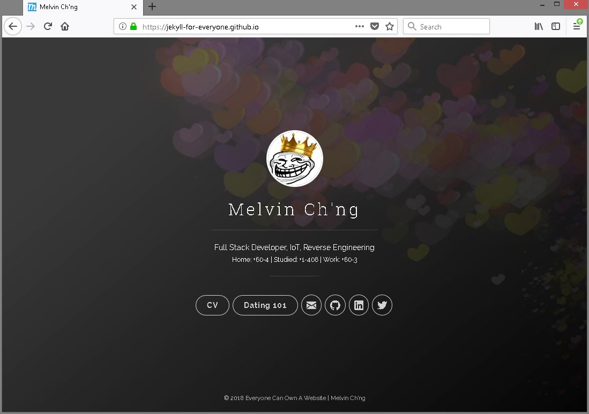
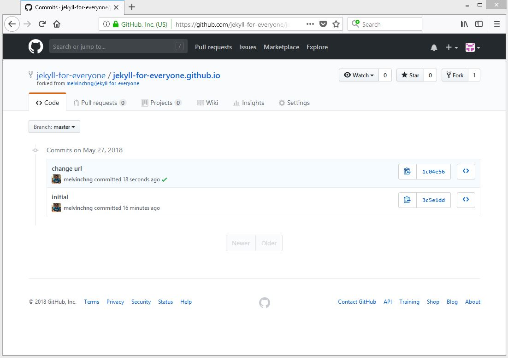

Last modified: Sat Jan 26 2019 20:00:12 GMT+0800 (Malay Peninsula Standard Time)
Sample Starter Code
Introduction
I compiled a package that contains three major components: homepage, CV, and Gitbook. The index page is a strip down version of Jekyll Uno while the CV a modification of Online CV. However, Legacy Gitbook (v3.2.3) is used instead of modern Gitbook (v4+). The main reason of using it is due to the fact that users can own their source code and edit them locally instead of doing it on the cloud.
This package is very user friendly for non-programmer as I reorganized all the files and have all the variables written in several data files. This make it them to edit without needing to go into the actual code.
Example of Final Product
- My Personal Website
- Jekyll For Everyone Sample Website
Note: The content in jekyll-for-everyone sample website is for illustration purpose only. It may not contain accurate information.
List of Features in the Package
- Index Page
- Name
- Title Line
- Secondary Information Line
- Links to social pages
- Links to other pages
- CV
- Summary or Background
- Education
- Experiences
- Individual Projects
- Group Projects
- Skill & Proficiency
- Related Courses
- Honors & Awards
- Languages
- Social Link
- Volunteer Experiences
- Gitbook
- Sample Gitbook
Initial Setup
You may follow this video that I made for Initial Setup or follow the steps below.
It is fairly easy to setup as most of the things are already done for you. There should not much things to be done for initial setup as it is ready to go. Please go through the steps in ascending order.
Fork The Project
To begin, head to my Github repository and fork (clone the project and store it in your account) the project. Figure below shows the repository. Press the "fork" button on the top right corner.

Figure: Repository for the project to be forked
Figure below shows the project is in the progress of being forked.
Figure: Repository in the progress of being forked
Then, your project will then be forked to your own github repository. Figure below shows the project is forked to my alternative Github account: "jekyll-for-everyone/jekyll-for-everyone" compared to my original account "melvinchng/jekyll-for-everyone".
Figure: Repository is forked
Edit Repository Name
The next step is to edit the repository name. To begin, head to setting (gear icon). Replace your website URL to your YOUR_GITHUB_USERNAME.github.io. Since my Github username is jekyll-for-everyone, the my repository will be jekyll-for-everyone.github.io. Figure below shows the repository name is edited.
Figure: Repository's name is edited
Note: The steps can be also found on the Adding a Jekyll theme to your GitHub Pages site with the Jekyll Theme Chooser on Github.
Complete the steps by pressing the button "rename". The name of your repository will then be updated. Figure belows shows the name of my repository is updated.
Figure: Repository name has been updated
Clone The Repository
Login to your Github Desktop (or alternative if you are using Ubuntu Linux). Go to File > Clone Repository and a pop up window will show up. Figure below shows the repository list for my account.
Figure: Clone repository screen
Select your repository and press clone. Figure below shows the repository is cloned.
Figure: Repository cloned
Edit Config File
The next step is to edit the configuration file _config.yml. Open your project folder in Visual Studio Code. In the file _config.yml, replace the website URL, line 5: url: 'http://your-url.github.io', to your YOUR_GITHUB_USERNAME.github.io. Since my Github username is jekyll-for-everyone, the link will be jekyll-for-everyone.github.io`. Figure below shows line 5 is modified.
Figure: URL is changed
To save the changes, press the green "commit" button at the end of the page. Figure below shows the location of the green "commit" button. If you would like to learn more about using Github, you may want to refer to Version Control Chapter on my Ruby on Rails Tutorial.
Figure: Commit the changes
Access The Website
You should be able to access your website via YOUR_GITHUB_USERNAME.github.io. Since my Github username is jekyll-for-everyone, the link to my website is jekyll-for-everyone.github.io. Figure below shows the landing page of my website.

Figure: Landing page at my website
If you would like to access the CV and Gitbook, use the link YOUR_GITHUB_USERNAME.github.io/cv and YOUR_GITHUB_USERNAME.github.io/gitbook.
You can also view the status of website in your "commits" tab at Github repository website. Figure below shows the status of github pages is building (orange circle).
Figure: Github pages is building
Figure below shows the status of my repository is built successfully (green check mark).

Figure: Github pages has been built successfully
Files Structure
The files and structures are listed below. This information will assist you in finding the content you would like to edit. If you are unsure what to do, skip to the next section and follow the sample video instruction.
Index Page
- The background picture for index page, named as
background-cover.jpgcan be found and replaced atindex_style/images. - The profile picture for index page and cv page, named as
profile.pngcan be found and replaced atassets/images. - All the data that shown in the index page are stored in
/_data/index_page.yml. Replace all the content in the files.
CV
- All the data that shown in the cv are stored in
/_data/cv_NAME.yml. Replace all the content in the files. - If you would like to remove a specific section in the cv, change the variable from
truetofalsefor the variable in/_data/cv_enable_section.yml.
Gitbook
- If you are not going to use the Gitbook feature, remove the
gitbookfolder. - The source code is stored at
/gitbook_source_code - The content of generated book using the command
gitbook buildis coped from/gitbook_source_code/_bookto/gitbook.your-website-link.github.io/gitbookwill be the link to access your Gitbook. If you would like to change the link, rename thelinkin/data/index_link.ymland rename your Gitbook folder based on the link you provide. - There are a lot of plugins that you can use to modify the appearence of Gitbook. More information available here.
Other
- If you would like to replace the website icon, you can use this website to create one and replace the downloaded icon at
/favicon.io. You may also use Website Planet's favicon generator as reflected by one of the reader of this tutorial, N Johnson. - If you would like to use Google Analytics, add your tracking number to
/_config.yml.
Edit The Content
You may follow this video that I made for Editing The Content Section or follow the steps below.
All the edit will be done via Visual Studio Code (as mentioned in earlier chapter). The location of the files and the content you should edit to make the web pages become yours are mentioned in the files structure. Once all the changes are made, commit the changes to Github Desktop. Within a minute or two, the webpages will be updated.
If you are not going to use the Gitbook feature, remove the link group (shown in video, but added back later) in /data/index_links.yml and Gitbook folder.
View The Content Locally
You may also view the changes locally in your machine before committing the changes. To start the server for Jekyll and Gitbook, use the command jekyll serve and gitbook serve (as mentioned in earlier chapter). Only one server can be started at the same time as they are sharing the same port number (4000).
Note: For the first time user, install Jekyll Sitemap and Jekyll SEO gems by using the command gem install jekyll-sitemap and gem install wdm. You may also want to install missing Gitbook plugins by using the command gitbook install.
Tips On Writing Gitbook
My best suggestion to you is to not to rush yourself while trying to prepare your material. Do not give yourself an ETA (Estimated Time of Arrival usually refers to when it should be completed) if you are trying to write a quality content. If you wonder how long it takes me to write this tutorial, it is definitely more than you have expected. I took more than two weeks (including weekend) to plan, write, and test this tutorial while working full time. I enjoy sharing and write content that like no other, especially content that is tailored to newbie.
Conclusion
I hope you enjoy the reading and managed to get the website working. As a reminder, if you love this project and would like to support it, spread the message and keep the footer as in. If you would like to learn more about Web Development and attempt to write your own web application, you may read my Ruby on Rails Tutorial that I wrote for people with minimal programming experience.